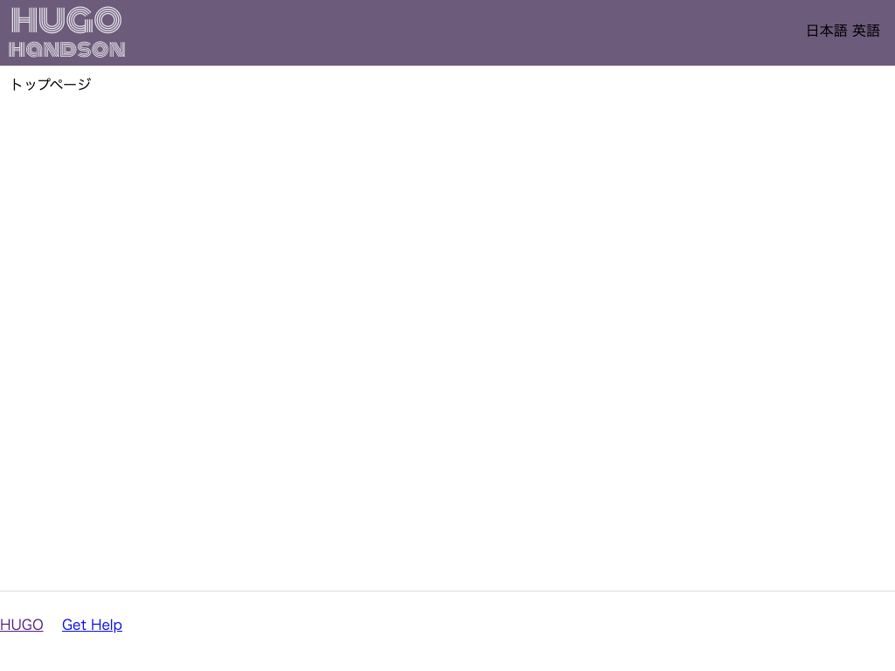

ヘッダーを作成する¶
ヘッダー部分を作りこんでいきます。
ロゴ¶
サイトをカスタマイズするときに、テーマテンプレートを修正するのは手間がかかります。 サイトごとに変更するようなロゴなどは、設定ファイルで変更できるようにします。
設定ファイル¶
config.tomlを開きます。[params]セクションを追加し、パラメータlogoパラメータを追加します。値には、画像のパスを指定します。1 2 3 4 5 6 7
baseURL = "http://example.org/" languageCode = "en-us" title = "My New Hugo Site" theme = "mytheme" [params] logo = "/img/logo.svg"
Note
テーマオリジナルの設定を追加するときには、[params] セクションに設定値を追加します。
ロゴファイルの配置¶
画像は静的ファイルなので、テーマ名/static の下に置きます。
-
次の画像を
logo.svgというファイル名で保存します。
-
themes/mytheme/static/の下にimgディレクトリを作成し、その中にlogo.svgを置きます。
テンプレートの修正¶
themes/mytheme/layouts/partials/header.html を開いて、黄色の部分を追加します。
1 2 3 4 5 6 7 8 9 | <div class="header"> <nav class="header-logo"> <a href="/"> {{ with .Site.Params.logo }}<img class="logo_img" src="{{ . }}"> {{ else }}{{ .Site.Title }}{{ end }} </a> </nav> <div class="header-menu-container"> ... |
Note
[params] セクション追加した設定値は Site.Params.変数名 で呼び出しできます。
css の修正¶
ロゴの色が薄いので、フッター部分に背景色をつけます。
themes/mytheme/static/css/default.css を開き、黄色の部分を追記します。
1 2 3 4 5 6 7 8 9 10 | .header { height: 75px; margin: 0 auto; padding: 0 16px; border-bottom: 1px solid #ddd; display: flex; justify-content: space-between; align-items: center; background-color: #6c5b7b; } |
動作確認¶
開発サーバを起動して確認してみましょう。
1 2 3 4 | # /Hugo/Sites/theme_tutorial 内 $ hugo server # http://localhost:1313/ にアクセスして確認 |
ヘッダーの背景色が変わり、ロゴが追加されました。

検索ボックスの追加¶
検索フォームを追加します。
テンプレートの修正¶
themes/mytheme/layouts/partials/header.html を開いて、黄色の部分を追加します。
1 2 3 4 5 6 7 8 9 10 11 12 13 | ... </nav> <div class="header-menu-container"> <nav class="search-box"> <form action="{{ "/search_result" | relURL }}"> <input type="text" name="q" aria-label="search" class="search-input" {{ with .Site.Params.search_placeholder }}placeholder="{{ . }}"{{ end }}> <input type="hidden" value="検索"> <button type="submit" class="search-button"><img src="/img/search.svg" alt="search"></button> </form> </nav> </div> <nav class="language"> ... |
検索アイコンの配置¶
-
次の画像を
search.svgというファイル名で保存します（画像はFlaticonより）
-
themes/mytheme/static/の下にimgディレクトリを作成し、その中にsearch.svgを置きます。
css の修正¶
themes/mytheme/static/css/default.css を開き、黄色の部分を追記します。
1 2 3 4 5 6 7 8 9 10 11 12 13 14 15 16 17 18 19 20 21 22 23 24 25 26 | .search-box { width: 300px; } .search-box form { display: flex; } .search-input { width: 250px; height: 35px; box-sizing: border-box; border: 1px solid #ddd; border-top-left-radius: 4px; border-bottom-left-radius: 4px; padding-left: 12px; } .search-button { width: 35px; height: 35px; background-color: #eee; border: 0; border-top-right-radius: 4px; border-bottom-right-radius: 4px; } |
設定ファイル¶
検索ボックスのプレースホルダーを設定ファイルで変更できるようにします。
config.tomlを開きます。- パラメータ
search_placeholderパラメータを追加します。値には、画像のパスを指定します。1 2 3 4 5 6 7 8
baseURL = "http://example.org/" languageCode = "en-us" title = "My New Hugo Site" theme = "mytheme" [params] logo = "/img/logo.svg" search_placeholder = "検索キーワードを入力"
検索結果ページ¶
検索ボックスで検索したときに表示する検索結果ページを作ります。
テンプレート¶
themes/mytheme/layouts/の下にsearch_resultディレクトリを作成します。- 作成した
search_resultの下に、single.htmlを作成します。 - 次の HTML を追記します。
1 2 3 4 5 6 7 8
{{ define "main" }} <div class="content"> <article> <h1>{{ .Title }}</h1> {{ .Content }} </article> </div> {{ end }}
Note
検索結果は独自のテンプレートを使いたいので、「search_result」という個別タイプのテンプレートを作ります（参照：シングルページテンプレート）
検索結果ページファイル¶
ページの実体を作ります。
content以下にsearch_result.mdを作成します。search_result.mdを開き、次の内容に修正します。1 2 3 4
--- title: "検索結果" type: "search_result" ---
動作確認¶
開発サーバを起動して、検索を試してみましょう。検索ページが表示されたら完成です。 （実際の検索機能は実装していないので、検索はできません）。
1 2 3 4 | # /Hugo/Sites/theme_tutorial 内 $ hugo server # http://localhost:1313/ にアクセスして確認 |